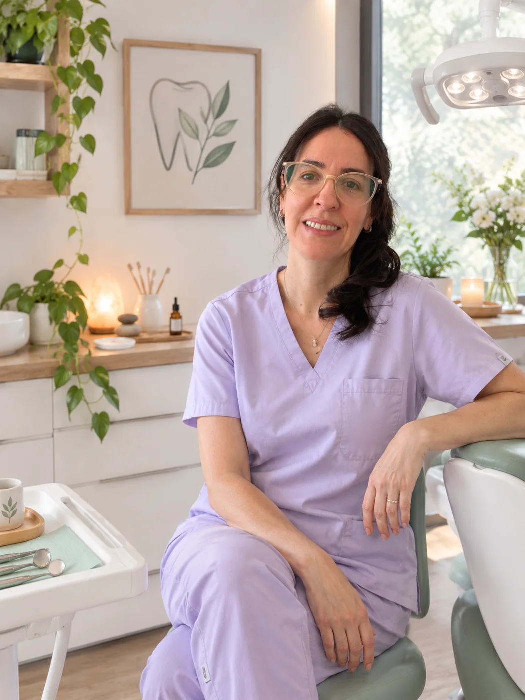
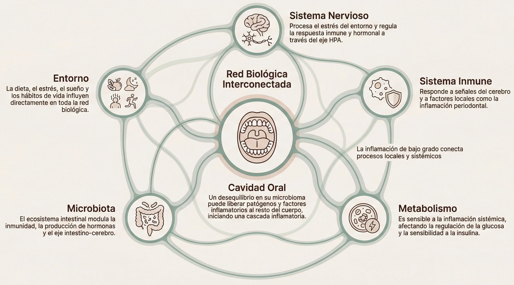
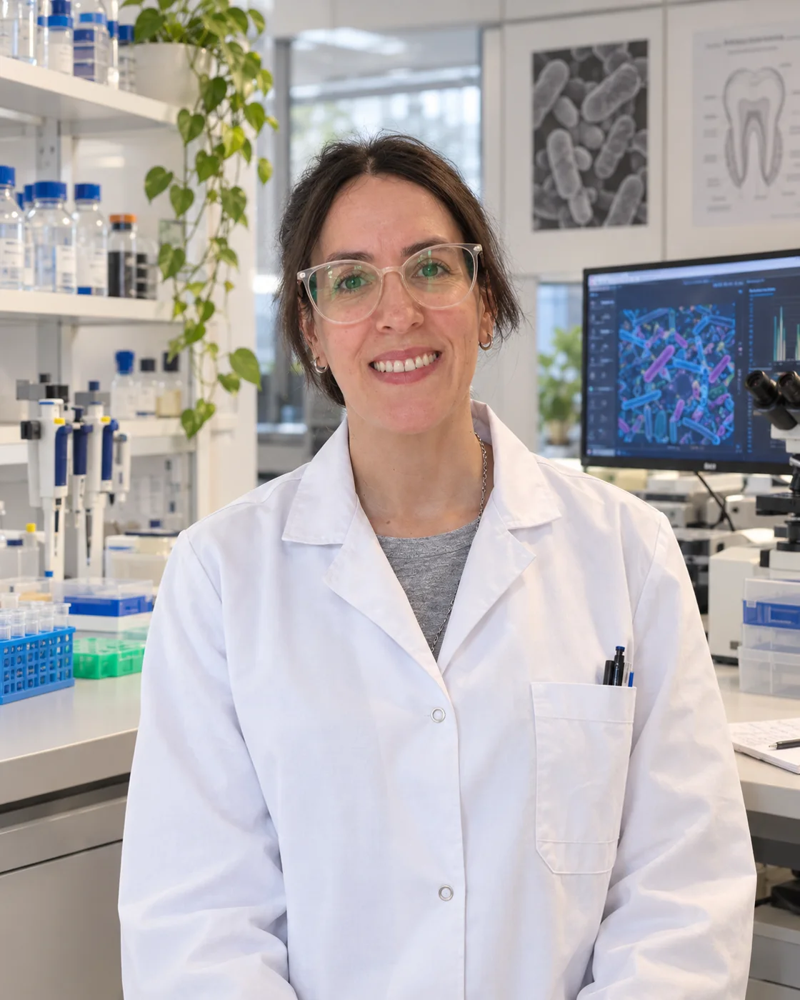

Hola, soy Vero
Doctora en Odontología - Odontóloga.
Experta en microbiota oral e inmunidad
Mi propósito es acompañarte a comprender tu salud bucal como parte de tu salud general, desde la ciencia, con el enfoque más integrativo y conservador posible.
Odontología científica integrativa
+ PNI clínica
para entender lo que
tu boca está manifestando
Ver cómo trabajo

mi forma de trabajar
¿Cuál es mi enfoque?
Abordo la salud desde una mirada integrativa y funcional, basada en la Psiconeuroinmunología Clínica (PNI), teniendo en cuenta la relación constante entre la salud bucal y el funcionamiento general del organismo. Busco comprender a la persona como un todo, considerando cómo interactúan sus diferentes sistemas y cómo esto puede repercutir en su bienestar.
Boca + microbiota oral
Sistema nervioso
Inmunidad
Metabolismo
Sistema digestivo
Medio ambiente
Y cómo los desequilibrios de esta red pueden expresarse en la boca — y desde la boca.
La salud emerge de la interacción entre sistema nervioso, inmunidad, metabolismo, microbiota, emociones y nuestro entorno. La cavidad oral participa activamente en esta red y puede influir —o verse influenciada— por procesos inflamatorios o endócrinos locales o sistémicos.
Una red biológica interconectada
¿Cómo dialoga tu boca con el resto de tu organismo?
Este es el mapa desde el que trabajamos en cada consulta.

Los 10 ejes de mi trabajo
que abordaremos juntas/os en las consultas integrativas
Para lograr un verdadero cambio, comprender tu biología es el punto de partida
- 01
Alimentación saludable
Enfocada en tu salud bucal y general.
- 02
Dormir y respirar bien
Indispensable para tu completo bienestar.
- 03
Cuidado de tu microbiota e inmunidad
El éxito de tu salud bucal a largo plazo.
- 04
Hábitos funcionales
Cómo tragás, respirás, tu postura, tus pies, etc.: todo se relaciona con tu boca.
- 05
Estilo de vida saludable
Indispensable para una boca en equilibrio.
- 06
Actividad física
Como estilo de vida y hábito saludable.
- 07
Emociones y estrés
Influyen directamente con tu salud bucal y general.
- 08
Contacto con la naturaleza y la luz solar
Importante para un correcto funcionamiento de tu cuerpo.
- 09
Higiene bucal consciente e integrativa
Necesitás aprender a limpiar tu boca de forma no agresiva.
- 10
Flexibilidad y paciencia
Cuando la salud se perdió, volver al equilibrio demanda tiempo y compromiso.
Si este enfoque resuena con vos, podés comunicarte para una consulta virtual o presencial.

Quién soy
Dra. Verónica A. Dubois, Ph.D.
Me especializo en la relación existente entre la salud bucal, su conexión con la salud general y enfermedades sistémicas de todo tipo.
Mi enfoque es reflexivo, basado en evidencia científica y orientado a comprender la biología funcional más allá del síntoma puntual. Brindo toda la atención odontológica aplicando los principios de la odontología moderna y conservadora, especialmente la odontología integrativa y mínimamente invasiva, cuyo objetivo es ser biocompatible preservando al máximo los dientes y las encías naturales.
Formación profesional
- Ph.D. Doctora en Odontología. Área de especialización: Microbiología Molecular y Microbiota Oral – FOUBA
- Odontóloga – UNC
- Experta en microbiota oral e inmunidad – Argentina · España
- Posgraduada en Psiconeuroinmunología Clínica (PNI) – España
- Diplomada en Investigación Clínica – UNAJ
- Posgraduada en Ortodoncia y Ortopedia Maxilar Funcional– UCC, COC, SAO, AAOFM
- Posgraduada en Endodoncia – IPO CBA - ArgEndo Rosario
- Odontóloga científica integrativa
- Educación y prevención en salud integrativa y su relación con enfermedades sistémicas
- Investigadora y asesora científica en Microbiología, Biología Molecular, Microbiota e inmunidad
- Ex Profesora regular, Cátedra de Microbiología e Inmunología – FOUBA
- Ex Profesora, Materia: Biología Molecular y Celular. Carrera de Bioingeniería – ITBA
Cuando ya no encontrás respuestas